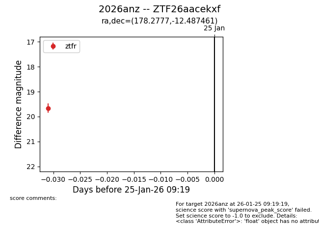
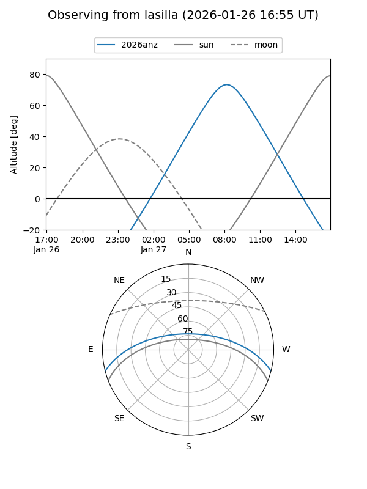
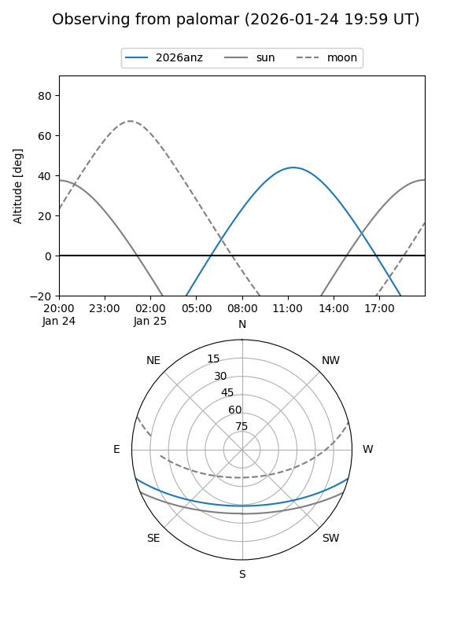

2026anz
Target 2026anz at 2026-01-27 09:21
Aliases and brokers:
FINK: link
Lasair: link
ALeRCE: link
TNS: link
YSE: link
alt names
ZTF26aacekxf (ztf,fink_ztf)
2026anz (tns,yse)
Coordinates:
equatorial (ra, dec) = 178.2777,-12.48746
equatorial (HMS+DMS) = 11:53:06.64,-12:29:14.86
galactic (l, b) = (281.4094,+47.93193)
Flags:
Photometry:
last ztfr=19.66
1 ztfr detections
Lightcurve

Visibility


Additional plots